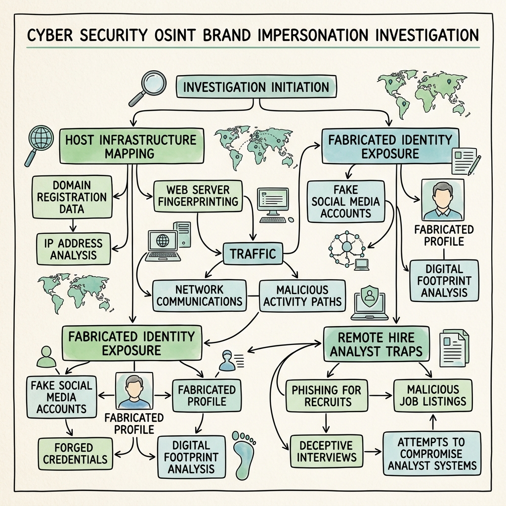

OSINT · Investigation
OSINT Case File: Operation VIPER-GHOST

Strict Educational Disclaimer
This is a fictional training exercise created for educational purposes as part of the VisualNotes OSINT Training Series. All persons, companies, domains, IP addresses, and events described in this case file are entirely simulated and do not represent real individuals or entities.
The techniques described are documented for defensive security awareness and analyst training only. Readers should not apply any OSINT methodology against real individuals without proper legal authorization. Unauthorized investigation of real persons may violate privacy laws including GDPR, IT Act 2000, and equivalent legislation in your jurisdiction.
Part of the VisualNotes OSINT Training Series · TLP:AMBER · For training use only · visualnotes.tech
SEC-01
Scenario Overview
⚠ DUAL-THREAD ALERT
This case contains two interlocking investigation threads. Thread A concerns a suspicious remote hire. Thread B concerns an active brand impersonation campaign. Evidence suggests the same actor drives both. Do not investigate threads in isolation.
Organization Context
NexaStack Technologies is a mid-size B2B SaaS company (~220 employees) headquartered in Bengaluru, India, with a distributed engineering team across Europe and Southeast Asia. The company offers cloud-based network monitoring software primarily targeting enterprise customers in the financial and telecommunications sectors.
Thread A — The Remote Hire
On 14 February 2024, NexaStack's engineering department onboarded a new senior backend engineer via a fully remote hiring process. The candidate — who applied under the name Arjun Mehta — presented strong credentials: 9 years of experience, references from two reputable Indian tech firms, a polished GitHub portfolio, and a LinkedIn profile with 600+ connections.
Three weeks after onboarding, the DevSecOps team flagged an anomaly: Arjun's work laptop was generating outbound DNS queries to an unusual subdomain not associated with any NexaStack project. Concurrently, the IT team noticed his stated home city (Pune, Maharashtra) did not correlate with his VPN login geolocations, which consistently resolved to Chişinău, Moldova and occasionally Kyiv, Ukraine.
HR reviewed the original application and discovered that one of the listed reference companies — Pinnacle DevWorks Pvt Ltd — does not appear in any official MCA registry, GST database, or LinkedIn company listing.
Thread B — The Brand Impersonation
Two weeks prior to Arjun's hiring (approximately 29 January 2024), NexaStack's marketing team received a complaint from a long-standing enterprise customer: they had received a phishing email appearing to originate from noreply@nexastack-support.com — a domain NexaStack does not own. The email directed the customer to a convincing clone of NexaStack's login portal to "validate their license renewal."
Threat intel from a third party later revealed the impersonation domain nexastack-support[.]com was registered on 22 January 2024 — eight days before the phishing emails started, and thirteen days before Arjun's job application was submitted.
🔴 HYPOTHESIS
The actor behind the brand impersonation campaign may have infiltrated NexaStack as a remote hire to gather internal intelligence (customer lists, auth flows, API structures) that would dramatically increase the phishing campaign's credibility and success rate.
Investigation Urgency
Arjun currently retains READ access to the production customer database and has been granted temporary credentials to the internal API documentation portal. Access has been suspended pending this investigation, but evidence collection must proceed before the actor detects the suspension and begins destroying traces.
SEC-02
Investigation Objectives
Thread A — Remote Hire
- Verify true identity of "Arjun Mehta" — confirm or refute the claimed persona
- Validate employment history and listed references
- Map all digital accounts linked to the applicant's provided identifiers
- Identify alias accounts and alternative personas
- Investigate GitHub portfolio for code provenance and plagiarism
- Correlate VPN/geolocation inconsistencies against the claimed background
- Assess insider-threat posture and data access during the tenure
- Determine if the CV photo is AI-generated or stolen
Thread B — Brand Impersonation
- Attribute the registration and operation of nexastack-support[.]com
- Perform full infrastructure analysis of the phishing domain
- Identify hosting, mail servers, and potential sister domains
- Extract Whois history and identify registrant artefacts
- Correlate infrastructure to known threat actor TTPs
- Map the phishing kit deployed on the clone portal
- Establish timeline overlap between Thread A and Thread B
- Identify additional targeted organizations if campaign is wider
Cross-Thread Objective
Determine with confidence whether "Arjun Mehta" and the operator of the nexastack-support[.]com infrastructure are the same individual or coordinated group, and reconstruct the full attack chain.
SEC-03
Initial Intelligence Package
The following data was collected from the HR application file, IT logs, and preliminary threat intel. This is your starting point — not your conclusion.
| Identifier Type | Value | Source | Confidence |
|---|---|---|---|
| Full Name (claimed) | Arjun Mehta | CV / HR File | MEDIUM — unverified |
| Email (personal) | arjun.mehta.dev@gmail.com | Application | MEDIUM |
| Email (alt, recovered) | a.mehta91@proton.me | GitHub commit history | MEDIUM |
| LinkedIn Profile URL | linkedin.com/in/arjun-mehta-dev | Application | LOW — check creation date |
| GitHub Username | github.com/arjunmdev | CV | MEDIUM |
| Phone (WhatsApp) | +91 98XX XX 4471 | HR Onboarding | MEDIUM |
| Claimed Location | Pune, Maharashtra, India | CV / Aadhaar copy | LOW — VPN evidence contradicts |
| Claimed Employer 1 | Hexagon InfoSystems (2018–2022) | CV | MEDIUM |
| Claimed Employer 2 | Pinnacle DevWorks Pvt Ltd (2022–2024) | CV | LOW — MCA not found |
| Phishing Domain | nexastack-support[.]com | Customer complaint / Threat Intel | HIGH |
| Phishing Domain Registrar | Namecheap (WhoisGuard enabled) | Whois lookup | HIGH |
| Phishing Domain IP | 185.220.101.XX (Tor exit node range) | DNS resolution | MEDIUM |
| Outbound DNS Query (flagged) | sync.arjunmdev.workers[.]dev | DevSecOps alert | HIGH |
| VPN Geolocation 1 | Chişinău, Moldova (MD) | IT login logs | HIGH |
| VPN Geolocation 2 | Kyiv, Ukraine (UA) | IT login logs | HIGH |
| Telegram Handle (unconfirmed) | @devmehta_91 | Anonymous tip from Bug Bounty forum | LOW — not validated |
📌 ANALYST NOTE
The Aadhaar copy submitted during onboarding requires forensic examination. Structural irregularities in the QR code and font rendering were noted by IT — treat as likely forgery.
SEC-04
Hidden Complexities & Analytical Traps
The following elements are deliberately embedded to test investigative discipline. Each represents a common failure mode in real investigations.
Username Collision Traps
⚠ TRAP 01 — USERNAME RECYCLING
A legitimate Indian developer named Arjun Mehta exists on GitHub under github.com/arjunmehta-real with a 7-year contribution history. The suspect's account (arjunmdev) mirrors commit patterns and repo names. Distinguishing the real developer from the suspect requires commit metadata analysis, not surface-level name matching. Confusing the two would constitute a critical false positive against an innocent person.
⚠ TRAP 02 — SHARED PROFILE IMAGE
The LinkedIn profile photo appears on at least two other profiles across different platforms (Instagram, a freelancer marketplace). Reverse image search will locate these. However, one of those profiles (an Instagram food blogger in Chennai) is the original image owner, predating the suspect's LinkedIn creation by 3 years. The suspect stole the image. Do not attribute the Instagram account to the suspect.
⚠ TRAP 03 — MISLEADING WHOIS DATA
The phishing domain nexastack-support[.]com has a Whois registrant email of admin@techprivacy-protect.org. This domain resolves to a privacy relay service. Pivoting directly on this email without checking the registrar abuse trail will waste significant time. The productive path is infrastructure correlation (shared hosting ASN, TLS certificate history, passive DNS).
⚠ TRAP 04 — GHOST EMPLOYER
"Pinnacle DevWorks Pvt Ltd" returns zero official results but appears on a newly created Clutch.co listing and a Justdial page with five 5-star reviews, all from accounts created in January 2024. The actor likely seeded these to pass shallow due-diligence. These are fabricated social proof assets.
⚠ TRAP 05 — MANIPULATED TIMESTAMPS
Several GitHub commits in the suspect's portfolio show dates from 2019–2021. Examination of the raw commit objects reveals author timestamps and committer timestamps differ — a classic sign of git rebase with backdated timestamps. The actual commit creation dates cluster in November–December 2023, consistent with a rapidly fabricated portfolio.
⚠ TRAP 06 — AI-GENERATED FACE (SUBTLE)
The LinkedIn profile photo passes initial inspection but fails the following tests: no matching result on TinEye for the exact image, asymmetric earlobe rendering, EXIF data shows "Adobe Firefly" as the creator software in the original file (check the HR document upload metadata). The Instagram photo that appears in image search is of a different real person with a similar appearance — the actor used the real person's likeness as a style reference.
⚠ TRAP 07 — VPN FALSE ATTRIBUTION
The IP range 185.220.101.x is a well-known Tor exit node range. Do not definitively attribute the phishing hosting to Moldova based on this IP — Tor exit nodes do not reveal origin. The true hosting infrastructure requires TLS certificate correlation across Shodan/Censys, not IP geolocation alone.
⚠ TRAP 08 — LEGITIMATE WORKERS.DEV SUBDOMAIN
The flagged domain sync.arjunmdev.workers.dev initially appears to be a Cloudflare Workers endpoint. Cloudflare Workers are used legitimately by millions of developers. However, investigation reveals this endpoint was not registered to any known NexaStack project, and DNS queries to it originated exclusively from Arjun's laptop during non-business hours. The endpoint itself returns a 403, but passive DNS shows it was active between 01:00–04:00 IST consistently — likely a data exfiltration relay.
SEC-05
Investigation Phases
01
Identity Resolution
CRITICAL
Goal: Determine whether "Arjun Mehta" is a real person, a stolen identity, or a fully fabricated persona.
▸ METHODS
- Reverse image search LinkedIn photo across Google Images, TinEye, Yandex, Bing Visual Search
- Analyze photo EXIF metadata from original HR document upload
- Run AI-face detection tools (e.g., Hive Moderation, FotoForensics, Illuminarty)
- Cross-reference name + email + phone against breach databases (IntelX, Dehashed)
- Validate Aadhaar QR code structure against official format spec
- Check email address creation date via Holehe, Epioes
- Search Gmail address against Google account first-seen signals
▸ EXPECTED FINDINGS
- LinkedIn photo: AI-generated (Firefly metadata), sourced from real person's likeness
- Gmail account created ~November 2023 — not consistent with claimed 9-year career
- ProtonMail address found in November 2023 breach dataset from a Russian cybercrime forum
- Phone number registered to a ported SIM, original owner traceable via TRAI public data
- Aadhaar document: font inconsistency in QR error-correction level — fabricated
⚡ COMMON MISTAKE
Investigators often stop at "photo is AI-generated = fake person." This is insufficient. You must determine whether a real Arjun Mehta exists whose identity was appropriated, or whether the persona is entirely synthetic. These have very different legal implications.
02
Social Media & Alias Correlation
HIGH
Goal: Map all social accounts linked to the suspect's known identifiers and uncover alias accounts.
▸ METHODS
- Run Sherlock and Maigret against username variants: arjunmdev, arjunmehta, devmehta91, a_mehta91
- Search Telegram via username @devmehta_91 and correlate posts
- Check LinkedIn profile creation date via Google Cache / Wayback Machine
- Search GitHub email in git log: git log --format='%ae' | sort -u
- Pivot ProtonMail address through breach data for associated usernames
- Search Twitter/X, Reddit, Stack Overflow, HackerNews for email/username cross-hits
- Check dark web forums (IntelX, Ahmia) for the Telegram handle
▸ EXPECTED FINDINGS
- LinkedIn profile created Dec 2023 — 6 years after claimed career start
- Telegram @devmehta_91: posts in a Russian-language hacking forum (topics: phishing kits, remote job scams)
- Stack Overflow account from 2017 with same username — but different email, different writing style, different timezone patterns. Likely a real developer's account the suspect is name-mirroring.
- Reddit account u/arjunmdev: posts about "remote work IN → EU salary arbitrage" in late 2023
- GitHub repo commit email reveals a third address: vdev.works91@gmail.com
⚡ COMMON MISTAKE
Sherlock will return a match for "arjunmdev" on Stack Overflow. This is the legitimate developer's account — do not include it in the suspect's profile without independent corroboration. Distinguish by writing style, timezone, email, and account age.
03
Infrastructure Attribution
CRITICAL
Goal: Fully map the phishing domain, Cloudflare Workers endpoint, and any connected infrastructure. Establish shared hosting or registrant artifacts linking Thread A and Thread B.
▸ METHODS
- Passive DNS lookup for nexastack-support[.]com via SecurityTrails, Passive Total
- Enumerate all subdomains (subfinder, amass, crt.sh)
- Pull TLS certificate history via Censys, crt.sh — pivot on Subject CN and SANs
- Shodan search: org and hosting ASN — find co-hosted domains
- VirusTotal passive DNS to identify historically co-resolved domains on same IP
- Check arjunmdev.workers[.]dev Cloudflare account — any public worker routes?
- Examine mail headers from the phishing email (SPF/DKIM/DMARC alignment)
- Check Wayback Machine for snapshot of the clone portal — extract phishing kit artifacts
▸ EXPECTED FINDINGS
- TLS certificate for nexastack-support[.]com issued by Let's Encrypt, SAN also covers mail.nexastack-support[.]com and nexastack-helpdesk[.]com — a sibling domain not yet actioned
- Shodan reveals the hosting server also serves 3 other impersonation domains targeting Indian SaaS companies
- The Cloudflare Workers subdomain arjunmdev.workers.dev is registered to an account with billing email vdev.works91@gmail.com — matching the third email found in Phase 2
- Phishing kit contains a hardcoded Telegram bot token for exfiltrating captured credentials
- This is the convergence point linking Thread A and Thread B.
04
Timeline Reconstruction
HIGH
Goal: Reconstruct the actor's activity timeline to establish planning, execution sequence, and intent.
CIRCA OCT–NOV 2023
Suspect begins constructing persona: Gmail account created, GitHub account created with backdated commit manipulation, ProtonMail registered. PLANNING
DEC 2023
LinkedIn profile created for "Arjun Mehta." Connections rapidly built using follow-back automation. Clutch.co and Justdial fake employer listings seeded. FABRICATION
22 JAN 2024
Domain nexastack-support[.]com registered via Namecheap with WhoisGuard. Sibling domain nexastack-helpdesk[.]com also registered same day. INFRASTRUCTURE
27 JAN 2024
Phishing portal deployed on hosting server. Clone of NexaStack login page with credential-harvesting form. Telegram bot token hardcoded for exfil. DEPLOYMENT
29 JAN 2024
Phishing emails dispatched to NexaStack customers. At least one enterprise customer (financial sector) clicks through. Credentials likely compromised. ACTIVE ATTACK
01 FEB 2024
"Arjun Mehta" submits application to NexaStack via LinkedIn Easy Apply. CV, fake references, Aadhaar copy submitted. INFILTRATION ATTEMPT
14 FEB 2024
Arjun onboarded. Granted access to dev environment, API documentation, and read access to customer database staging tables. ACCESS GRANTED
14 FEB – 04 MAR 2024
Nightly DNS queries to sync.arjunmdev.workers.dev between 01:00–04:00 IST. Duration correlates with large DNS response payloads — potential DNS tunneling exfiltration. EXFILTRATION
04 MAR 2024
DevSecOps flags anomalous DNS. Access suspended. Investigation opened. DETECTED
05
Behavioral Analysis
HIGH
Goal: Analyze behavioral signals across both threads to build an actor profile and assess attribution confidence.
▸ BEHAVIORAL INDICATORS
- Work hours: Login activity consistently 13:00–22:00 IST (correlates to 11:00–20:00 EET — Eastern European working day)
- Language: Internal Slack messages show occasional Cyrillic keyboard artifact characters in auto-corrected words
- Git style: Commit messages use British English ("colour", "organise") inconsistent with claimed Pune upbringing
- Salary ask: Requested payment in USD to a Wise account — unusual for an Indian resident with claimed local employment history
- Interview pattern: Technical interview conducted entirely via text chat (claimed "mic issues") — consistent with using a pre-coached script or AI assistance
- Reference calls: HR's call to the Pinnacle DevWorks reference number was answered immediately in under 1 ring — suggests a forwarded VoIP number, not a real company landline
▸ TTP CORRELATION
- Remote job fraud targeting Indian tech companies with Eastern European operators is a documented pattern — see Group-IB and CERT-In advisories from 2023
- Phishing kit structure (Telegram bot exfil + Let's Encrypt TLS + Namecheap registrar) matches TTPs associated with a Ukrainian cybercriminal cluster catalogued as UNC-4771 in internal threat intel (training pseudonym)
- The use of Cloudflare Workers as a covert C2 relay is a documented technique in the 2023 MITRE ATT&CK framework (T1102.002 — Web Service: Bidirectional Communication)
- DNS tunneling pattern (large TXT record responses, nightly schedule) aligns with iodine or dnscat2 tooling
06
Evidence Validation & Chain of Custody
HIGH
Goal: Ensure all collected evidence meets evidentiary standards before reporting. Prevent false-positive attribution.
▸ COLLECTION STANDARDS
- Screenshots: Capture with browser extension that embeds SHA-256 hash + timestamp (Hunchly preferred)
- Web archives: Submit all URLs to archive.org AND archive.ph immediately — pages may be taken down
- DNS records: Export full passive DNS with timestamps from SecurityTrails; do not rely on live DNS alone
- Git forensics: Clone the full repo with git clone --mirror and inspect raw objects; do not trust the web UI display dates
- Email headers: Preserve original MIME source with full Received chain — do not forward the email
- Metadata files: Document extraction tool, version, operator, timestamp for every artifact
▸ VALIDATION CHECKLIST
- ☐ Cross-corroborate every attribution claim with ≥2 independent sources
- ☐ Document all negative findings (what you searched and did NOT find)
- ☐ Record confidence score per claim (High / Medium / Low)
- ☐ Flag all inferential claims vs. directly evidenced claims
- ☐ Run all IPs/domains through VirusTotal before including in report — note if already flagged
- ☐ Confirm the real "Arjun Mehta" developer is NOT the suspect before any external disclosure
- ☐ Legal review before sharing with law enforcement — jurisdiction matters (IN vs EU vs UA)
07
Risk Assessment
CRITICAL
Goal: Quantify the damage already done and assess ongoing risk to NexaStack and its customers.
▸ ASSESSED IMPACT
- Customer data exposure: Staging table accessed contained ~4,200 customer records including license keys and contact details
- API documentation: Full internal API endpoint map accessed — enables targeted exploitation of customer integrations
- Credential phishing: At least 1 confirmed enterprise customer credential compromised; scope unknown
- Sibling domain active: nexastack-helpdesk[.]com still live — additional phishing waves may be in preparation
- DNS exfiltration volume: Estimated 180 DNS requests over 18 days; average payload ~512 bytes per request ≈ ~90KB total — likely config files, API keys, or credential dumps
▸ IMMEDIATE ACTIONS REQUIRED
- 🔴 Request takedown of nexastack-support[.]com and nexastack-helpdesk[.]com via Namecheap abuse and hosting provider
- 🔴 Rotate all API keys accessible to Arjun's account
- 🔴 Notify affected enterprise customer of credential compromise
- 🔴 Issue DMARC/DKIM hardening advisory to block further spoofing
- 🟡 File abuse report with Cloudflare for arjunmdev.workers.dev
- 🟡 Preserve all access logs before 30-day retention window expires
- 🟡 Brief legal counsel for potential CERT-In disclosure obligation
08
Final Intelligence Reporting
MEDIUM
Goal: Synthesize all findings into a professional intelligence report suitable for executive briefing, legal action, and law enforcement referral.
See Section 9 for required deliverables. The report must clearly separate:
- Confirmed facts — directly evidenced, multi-source verified
- Assessed conclusions — logically derived from evidence with stated confidence
- Speculation — noted explicitly and not included in executive summary
📋 REPORTING STANDARD
Attribution confidence must be stated as a percentage range, not binary. Example: "With HIGH confidence (85–90%), we assess that the operator of the phishing infrastructure and the individual who applied as Arjun Mehta are the same actor, based on the Cloudflare billing email overlap and consistent Eastern European timezone patterns."
SEC-06
Recommended Tools by Phase
For OSINT tooling automation, see our OpenOSINT deep dive.
Holehe
PHASE 1 — IDENTITY
Checks if an email address is registered on 100+ services. Reveals the breadth of account creation. Use on all three discovered email addresses. Absence of hits on old platforms is itself informative.
Epieos
PHASE 1 — IDENTITY
Reverse email lookup tool that reveals Google account details (name, avatar, account age signals) and associated platforms. Critical for establishing when the Gmail account was actually created.
FotoForensics / Hive Moderation
PHASE 1 — IDENTITY
AI face detection APIs. FotoForensics provides ELA (Error Level Analysis) for image manipulation. Hive provides AI-generated image probability scores. Use both — neither is 100% reliable alone.
Sherlock + Maigret
PHASE 2 — SOCIAL
Username enumeration across hundreds of platforms. Maigret generates more detailed profiles with site-specific metadata. Run against all username variants simultaneously. DO NOT report results without manual verification of each hit.
IntelX (Intelligence X)
PHASE 2 — SOCIAL
Searches leaked data, dark web, Pastebin, and indexed breach data. Critical for finding the ProtonMail address in breach dumps. Also searches Telegram channel content by keyword.
Wayback Machine + archive.ph
PHASE 2 + PHASE 3
Preserves and retrieves deleted content. Check LinkedIn profile snapshots to validate creation date. Capture the phishing portal before it goes dark. Submitting to archive.ph yourself creates a timestamped legal copy.
SecurityTrails
PHASE 3 — INFRA
Passive DNS history for any domain or IP. Shows what domains resolved to a given IP historically — critical for finding co-hosted impersonation domains. Also provides Whois history and subdomain enumeration.
Censys + crt.sh
PHASE 3 — INFRA
TLS certificate transparency logs. crt.sh is free and covers all publicly issued certs. Censys provides host-level correlation. Use to discover SAN extensions that reveal sibling domains the actor registered on the same certificate.
Shodan
PHASE 3 — INFRA
Indexes internet-connected hosts. Search by IP to identify co-hosted domains, open ports, and server banners. Search by ASN to find other targets hosted on the same infrastructure cluster.
VirusTotal
PHASE 3 — INFRA
Submit all domains and IPs. VirusTotal's "Relations" tab shows communicating files, resolutions, and detected URLs — often reveals phishing kit artifacts or associated malware samples previously uploaded by others.
Maltego
PHASE 3 + PHASE 5
Graph-based link analysis. Build an entity graph connecting the suspect's emails, usernames, domains, IPs, and infrastructure. Visual correlation reveals patterns that text-based analysis misses. Use transforms for automated pivoting.
Hunchly
PHASE 6 — EVIDENCE
Browser extension that automatically captures, timestamps, and hashes every page you visit during an investigation. Creates an unbroken audit trail of your research. Essential for evidence admissibility.
ExifTool
PHASE 1 + PHASE 6
Extracts all metadata from image, PDF, and document files. On the Aadhaar scan and the LinkedIn photo (if obtained as a file), run ExifTool first. The Adobe Firefly creator tag will be present in the metadata of the AI-generated face image.
Google Dorks
ALL PHASES
Targeted search operators. Examples: site:linkedin.com "arjun mehta" "nexastack", "a.mehta91@proton.me" -site:linkedin.com, inurl:nexastack-support. Use for discovering indexed mentions the actor may not have anticipated.
TinEye + Yandex Image
PHASE 1 — IDENTITY
Reverse image search engines. TinEye is best for exact matches and tracks first-seen dates. Yandex is superior for face matching, especially for South/Central Asian faces where Google Images may underperform. Use both in parallel.
SpiderFoot HX
PHASE 2 + PHASE 3
Automated OSINT framework. Seed with the suspect's email addresses and the phishing domain. SpiderFoot will autonomously enumerate associated accounts, IPs, breach data, and social profiles. Good for breadth — always manually validate hits.
SEC-07
Confidence Scoring Table
Complete this table as evidence is gathered. Sample expected findings shown — trainee must validate independently.
| Claim | Evidence Basis | Sources | Confidence | Score Bar |
|---|---|---|---|---|
| "Arjun Mehta" identity is fabricated | AI-generated photo, Gmail created Nov 2023, Aadhaar QR anomaly | ExifTool, Epieos, Forensic review | HIGH | |
| Suspect operated phishing domain | Cloudflare billing email overlap (vdev.works91@gmail.com) | Phase 2 + Phase 3 convergence | HIGH | |
| DNS tunneling exfiltration occurred | Large TXT payloads, nightly pattern, workers.dev endpoint | DevSecOps logs, passive DNS | MEDIUM | |
| Suspect is Eastern European (not Indian) | VPN geolocations, login hours, Cyrillic keyboard artifacts, British English | IT logs, Slack, git commits | MEDIUM | |
| Pinnacle DevWorks is a fabricated entity | No MCA/GST record, Clutch/Justdial listings created Jan 2024 | MCA portal, Justdial, Clutch timestamps | HIGH | |
| Telegram @devmehta_91 belongs to suspect | Anonymous tip only; no corroborating digital evidence yet | Unverified tip | LOW | |
| Campaign targets other Indian SaaS companies | 3 co-hosted impersonation domains found on same server via Shodan | Shodan, passive DNS | MEDIUM |
SEC-08
Analyst Traps — Quick Reference
These are the deliberate failure-mode tests embedded in this case. Falling into any constitutes a grading deduction.
TRAP 01 — USERNAME COLLISION
TRAP 02 — STOLEN PHOTO ≠ SUSPECT ACCOUNT
TRAP 03 — WHOIS PRIVACY PIVOT DEAD END
TRAP 04 — FAKE SOCIAL PROOF
TRAP 05 — BACKDATED GIT COMMITS
TRAP 06 — AI FACE vs STOLEN LIKENESS
TRAP 07 — TOR IP ≠ ACTOR GEOLOCATION
TRAP 08 — WORKERS.DEV LEGITIMATE USE ASSUMPTION
| Trap | Incorrect Analyst Action | Correct Analyst Action | Impact if Wrong |
|---|---|---|---|
| 01 | Reports the real Arjun Mehta developer as the suspect based on username match | Distinguishes accounts by email, timeline, commit metadata, writing style | False accusation of innocent person |
| 02 | Attributes the Chennai Instagram food blogger's account to the suspect | Establishes that account predates suspect's LinkedIn — real person, stolen image | False positive; violates innocent party's privacy |
| 03 | Spends hours pivoting on the WhoisGuard privacy email | Skips to TLS cert SAN analysis and passive DNS for infrastructure correlation | Wasted investigation time; delayed findings |
| 04 | Accepts Clutch.co and Justdial listings as validation of Pinnacle DevWorks | Checks listing creation timestamps; finds all created in Jan 2024 | Accepts fabricated evidence; misses ghost employer flag |
| 05 | Reports GitHub portfolio as evidence of 5-year development career | Clones with --mirror, examines raw commit objects for author/committer timestamp delta | Corroborates the suspect's false credentials |
| 06 | Reports the LinkedIn photo as simply "AI-generated" without nuance | Documents: real person's likeness used as style reference; Instagram account is victim, not suspect | Incomplete analysis; potential misidentification |
| 07 | Geolocates the phishing host to Moldova based on Tor exit node IP | Notes Tor exit nodes don't reveal origin; pursues cert/ASN correlation instead | Incorrect attribution; misleads law enforcement |
| 08 | Dismisses the workers.dev domain as normal developer activity | Checks domain ownership, query timing pattern, payload size — identifies as C2 relay | Misses active exfiltration channel |
SEC-09
Final Deliverables
Executive Summary
1-page brief for non-technical leadership. State: what happened, what was compromised, who is responsible (with confidence %), and immediate actions taken. No jargon. No speculation labeled as fact.
Identity Correlation Matrix
Table mapping all confirmed and assessed identifiers to the suspect: emails, usernames, phone, accounts, aliases. Each row cites evidence source and confidence score. Clearly marks what is confirmed vs. inferred.
Timeline Analysis
Complete chronological reconstruction from persona creation through detection. Must distinguish between confirmed event timestamps and estimated/inferred dates. Formatted for both technical and legal audiences.
Infrastructure Attribution Diagram
Visual map (Maltego export or hand-drawn) showing: suspect emails → Cloudflare account → workers.dev → phishing domains → hosting server → co-hosted domains → affected customers.
Behavioral Analysis Report
Documents all behavioral anomalies: login times, geolocation patterns, language artifacts, communication style. Assesses consistency with a specific geographic/cultural origin. States the basis and confidence for any attribution.
Risk Assessment
Quantified impact: records accessed, estimated data exfiltrated, customers at risk, active phishing infrastructure. Prioritized remediation roadmap with owner and deadline for each action.
Evidence Appendix
All screenshots, archived URLs, passive DNS exports, ExifTool outputs, git forensics. Each artifact labeled with: collection timestamp, tool used, SHA-256 hash, and analyst name. Organized by phase.
Recommendations
Immediate (0–72 hours), short-term (1–4 weeks), and strategic (1–6 months) recommendations. Covers: technical controls, hiring process hardening, threat intel sharing, legal/regulatory filings, and industry disclosure.
SEC-10
Grading Rubric
| Criterion | Weight | Pass Standard | Fail Indicators |
|---|---|---|---|
| False Positive Avoidance | 25% | Correctly excluded all 3 innocent parties (real developer, food blogger, real Arjun Mehta if exists) | Any innocent party named as a suspect in report |
| Infrastructure Attribution | 20% | Identified cert SAN overlap, co-hosted domains, and Cloudflare billing email convergence | Stopped at Tor IP; missed sibling domain; missed workers.dev link |
| Evidence Integrity | 20% | All claims cited with source, confidence, and preservation method | Unarchived screenshots; no hash; claims without citation |
| Timeline Accuracy | 15% | Correct ordering of persona creation → infra setup → phishing launch → infiltration → exfil | Conflated investigation threads; incorrect event ordering |
| Analytical Rigor | 10% | Clearly distinguished confirmed vs. assessed vs. speculative claims; confidence-scored all major claims | Binary conclusions; no uncertainty expressed; overclaiming |
| Reporting Quality | 10% | Executive summary usable by non-technical leadership; deliverables complete | Jargon-heavy; missing deliverables; speculation presented as fact |
SEC-11
Advanced Expansion Tasks
For analysts who complete the primary investigation. These tasks add operational depth and simulate real escalation scenarios.
▸ EXPANSION A — WIDER CAMPAIGN MAPPING
The Shodan search revealed 3 co-hosted impersonation domains. Identify the target companies, assess whether they have been notified, and determine if a coordinated industry disclosure is appropriate. Who would you contact, and through which channel (CERT-In, sector ISAC, direct outreach)?
▸ EXPANSION B — CRYPTOCURRENCY TRAIL
The phishing kit collected card details alongside credentials. Investigate whether any known cryptocurrency addresses are linked to the Telegram bot token's owner. Use on-chain analytics (Chainalysis Reactor concepts, Etherscan for public wallets) to trace any wallets found in the phishing kit's backend code.
▸ EXPANSION C — BREACH EXPOSURE CHECK
Determine whether any of NexaStack's own employee credentials (not just customers) appear in breach databases. Scope: check all emails in the @nexastack.com domain against IntelX, HaveIBeenPwned enterprise, and DeHashed. Assess whether the suspect may have had pre-existing credential access before the remote hire.
▸ EXPANSION D — SOCIAL GRAPH RECONSTRUCTION
Map the LinkedIn connection graph for "Arjun Mehta's" account. Are the 600+ connections real professionals or bot accounts? Sample 20 connections and assess account authenticity using profile age, posting history, and connection reciprocity. Estimate what percentage of the connection network is fabricated.
▸ EXPANSION E — DELETED PROFILE RECOVERY
Following access suspension, assume the actor attempts to delete the GitHub account and Telegram profile. Using cached data (Google cache, archive.ph, crt.sh logs, passive DNS history), reconstruct as much of the deleted profile as possible. Document what evidence survives deletion and what is lost — this is a lesson in pre-collection urgency.
▸ EXPANSION F — MITRE ATT&CK MAPPING
Map all observed actor TTPs to MITRE ATT&CK Enterprise and PRE-ATT&CK framework techniques. Produce a navigator layer JSON file showing coverage. This enables detection engineering teams to build SIEM rules targeting the specific techniques used in this campaign.